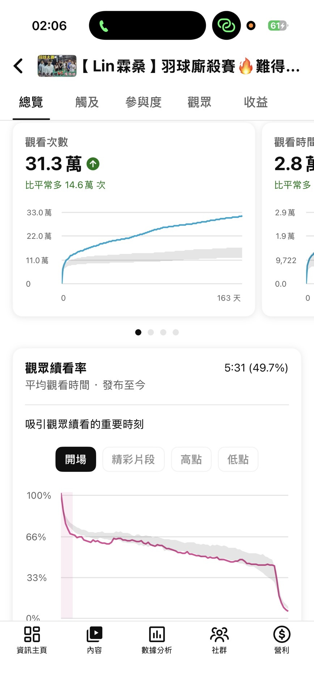

YouTube 頻道「Lin霖桑」| 幕後影音剪輯
幕後剪輯與高留存率策略驗證
點擊下方圖片觀看影片
【 Lin霖桑 】羽球廝殺賽🔥難得兄弟齊心聯手!!肯定是要打爆對手的吧😂
觀看次數：31.3萬
續看率：49.7%

幕後剪輯與高留存率策略驗證
點擊下方圖片觀看影片
觀看次數：31.3萬
續看率：49.7%

傳播的本質是溝通，而我已準備好在這個更寬廣的學術舞台上，
傾聽社會的聲音，述說更多動人的故事。
期待能加入貴系，為未來的傳播領域注入一股嶄新的活力。